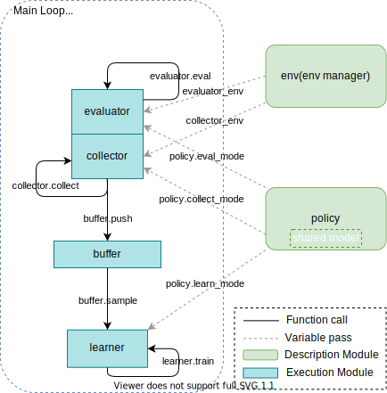
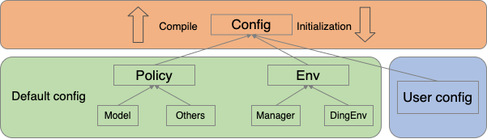
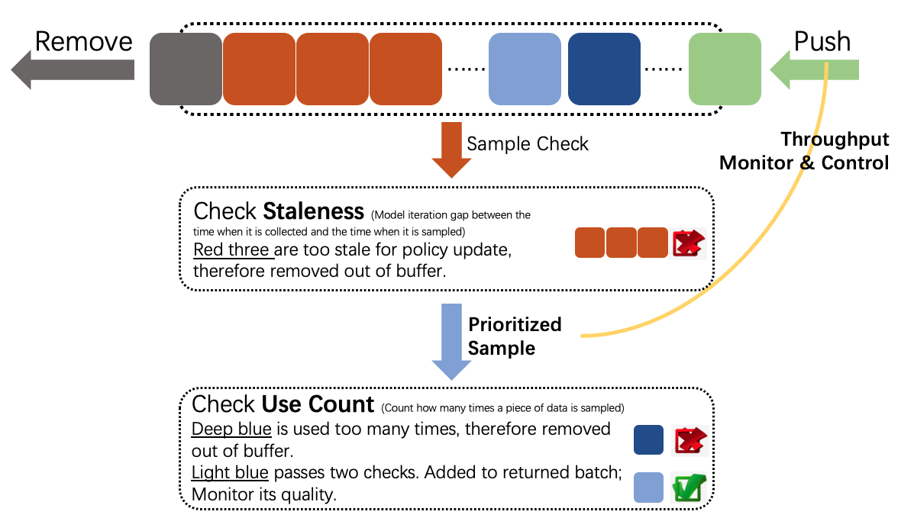

Key Concept¶
Here we show some key concepts about reinforcement learning training and evaluation pipeline designed by DI-engine. One of the basic control flows(serial pipeline) can be described as:
In the following sections, DI-engine first introduces key concepts/components separately, then combines them like building a special “Evolution Graph” to offer different computation patterns(serial, parallel, dist).
Concept¶
Environment and policy are the most two important concepts in the total design scheme, which can also be called description modules, in most cases, the users of DI-engine only need to pay
attention to these two components.
Worker modules, such as learner, collector, and buffer, are execution modules implementing the corresponding tasks derived from the description modules. These worker
modules are general in many RL algorithms, but the users can also override their components easily, the only restriction is to obey the basic interface definition.
Last but not least, config is the recommended tool to control and record the whole pipeline.
Tip
Environment and policy are partially extended from the original definition in other RL papers and frameworks.
Environment¶
DI-engine environment is a superset of gym.Env, it is compatible with gym env interfaces and offers some optional interfaces, e.g.: dynamic seed, collect/evaluate setting, Env Overview
EnvManager, usually called Vectorized Environments in other frameworks, aims to implement parallel environment simulation to speed up data collection. Instead of interacting with 1 environment per collect step, it allows the collector to interact with N homogeneous environments per step, which means that action passed to env.step is a vector with a length of N, and the return value of env.step (obs, reward, done) is the same as it.
For the convenience of asynchronous reset and unifying asynchronous/synchronous step, DI-engine modifies the interface of env manager like this:
# DI-engine EnvManager # pseudo code in the other RL papers
env.launch() # obs = env.reset()
while True: # while True:
obs = env.ready_obs
action = random_policy.forward(obs) # action = random_policy.forward(obs)
timestep = env.step(action) # obs_, reward, done, info = env.step(action)
# maybe some env_id matching when enable asynchronous
transition = [obs, action, timestep.obs, timestep.reward, timestep.done] # transition = [obs, action, obs_, reward, done]
# if done:
# obs[i] = env.reset(i)
if env.done: # if env.done # collect enough env frames
break # break
There are three types EnvManager in DI-engine now:
BaseEnvManager——local test and validation
SyncSubprocessEnvManager——parallel simulation for low fluctuation environment
AsyncSubprocessEnvManager——parallel simulation for high fluctuation environment
The following demo image shows the detailed runtime logics between BaseEnvManager and SyncSubprocessEnvManager:

For the subprocess-type env manager, DI-engine uses shared memory among different worker subprocesses to save the cost of IPC, and pyarrow will be a reliable alternative in the following version.
Note
If the environment is some kind of client, like SC2 and CARLA, maybe a new env manager based on python thread can be faster.
Note
If there are some pre-defined neural networks in the environment using GPU, like the feature extractor VAE trained by self-supervised training before RL training, DI-engine recommends utilizing parallel executions in each subprocess rather than stack all the data in the main process and then forward this network. Moreover, it is not an elegant method, DI-engine will try to find some new flexible and general solution.
Besides, for robustness in practical usage, like IPC error(broken pipe, EOF) and environment runtime error, DI-engine also provides a series of Error Tolerance tools, e.g.: watchdog and auto-retry.
For all the mentioned features, the users can refer to EnvManager Overview for more details.
Policy¶
To unify the design pattern and modularization of RL and other machine learning algorithms, DI-engine abstracts and defines the general policy interfaces with multi-mode design.
With these abstractions, plenty of the AI decision algorithms can be summarized in only one python file, i.e.: corresponding policy class. And the user’s customized algorithms only need to inherit and extend Policy or just have the same interface definition with it.
The Multi-Mode of Policy¶
In most cases, RL policy needs to execute different algorithm procedures for different usages, e.g.: for DQN, the model forward and calculating TD error in training, the model forward without gradient computation and use epsilon-greedy to select actions for exploration in collecting. Therefore, DI-engine policy unifies all the algorithm content in only one python file, prepares some simple interface methods, and combines them into 3 common modes——learn_mode, collect_mode, eval_mode, as is shown in the next image:

Learn_mode aims to policy updating, collect_mode does proper exploration and exploitation to collect training data, eval_mode evaluates policy performance clearly and fairly. And the users can customize their own algorithm ideas by overriding these modes or design their customized modes, such as hyperparameters annealing according to training results, selecting battle players in self-play training, and so on. For more details, the users can refer to Policy Overview.
Note
policy.learn_mode is not the instance of Policy but a pure interface collection(implemented by namedtuple), which means the users can implement their policy class just ensuring the same method names and input/output arguments as the corresponding modes.
Processing Function¶
In practical algorithm implementations, the users often need too many data processing operations, like stacking several samples into a batch, data transformation between torch.Tensor and np.ndarray. As for RL algorithms themselves, there are a great number of different styles of data pre-processing and aggregation, such as calculating N-step return and GAE(Generalized Advantage Estimation), split trajectories or unroll segments, and so on. Since then, DI-engine has provided some common processing functions, which can be called a pure function. And the users can utilize these functions both in collect mode and in learning mode.
For example, where should we calculate advantages for some on-policy algorithms, such as A2C/PPO, learn mode or collect mode? The former can distribute computation to different collector nodes in distributed training for saving time, and the latter can usually gain better performance due to more accurate approximation, just a trade-off. For a framework, it is much wiser to offer some powerful and efficient tools rather than restricting some fixed pipelines. The following table shows some existing processing functions and related information:
Function Name |
Description |
Path |
|---|---|---|
default_collate |
Stack samples(dict/list/tensor) into batch |
ding.utils.data.collate_fn |
default_decollate |
Split batch into samples |
ding.utils.data.collate_fn |
get_nstep_return_data |
Get nstep data(reward, next_obs, done) |
ding.rl_utils.adder |
get_gae |
Get GAE advantage |
ding.rl_utils.adder |
to_tensor |
Transform data to torch.Tensor |
ding.torch_utils.data_helper |
to_device |
Transform device(cpu or cuda) |
ding.torch_utils.data_helper |
Scale Up to Parallel Training¶
TBD
Config¶
key concept¶
Config module is a component for users to determine what kind of parameters they want to use. The overall design is as follows:
As you can see from the above diagram, the entire config is mainly from two parts. One is called Default Config, which is our recommended setting for policy and env, and may not change a lot. The other is called User Config, which users may want to specify case by case.
In order to get the entire config, we have compile phase, a bottom-up process. First we get the default setting for each submodule like Learner, Collector, etc. Then we put them together and get Default Config for policy and env. Finally, we merge Default config with User Config and get the entire config.
On the other hand, initialization phase, the process to create modules according to config, is from top to bottom. We will start from policy and env, and then pass configs to each execution modules.
In DI-engine, we write config as a python dict. Below is an outline for Default Config.
cartpole_dqn_default_config = dict(
env=dict(
manager=dict(...),
...
),
policy=dict(
model=dict(...),
collect=dict(...),
learn=dict(...),
eval=dict(...),
other=dict(
replay_buffer=dict(),
...
),
...
),
)
config overview¶
In the following table, we list some commonly-used keys as well as their meanings. For policy-related keys, please refer to the document Hands On RL section.
Key |
Meaning |
|---|---|
policy.batch_size |
(int) number of data for a training iteration |
policy.update_per_collect |
(int) after getting training data, leaner will update model for update_per_collect times |
policy.n_sample |
(int) number of samples that will be sent to replay_buffer from collector |
policy.nstep |
(int) number of steps that will be used when calculating TD-error. |
policy.cuda |
(bool) whether to use cuda when training |
policy.priority |
(bool) whether to use priority replay buffer |
policy.on_policy |
(bool) whether to use on policy training |
env.stop_value |
(int) when reward exceeds env.stop_value, stop training |
env.collector_env_num |
(int) number of environments to collect data when training |
env.evaluator_env_num |
(int) number of environments to collect data when evaluating |
Rules when merging user-specific config and predefined config:
User-specific config is of highest priority, which means that it will cover the predefined one when conflict occurs.
Some important keys, such as
env.stop_value,env.n_evaluator_episode,policy.on_policy,policy.collect.n_sampleorpolicy.collect.n_episodemust be specific.The merged entire config will be saved to
total_config.pyandformatted_total_config.pyby default.
How to customize?¶
Suppose we need to set key nstep mentioned above to 3, how to do it?
If the file name of user config is dqn_user_config.py, just add the following code into User config.
policy=dict(
...,
learn=dict(
...,
nstep=3,
)
)
After writing the user config, we can run our DQN experiment according to Quick Start.
Worker-Collector¶
Collector is one of the most important components among all the workers, which is often called actor in other frameworks and DI-engine renames it to distinguish with actor-critic. It aims to offer sufficient
quantity and quality data for policy training (learner). And collector is only responsible for data collection but decoupled with data management, that is to say, it returns collected trajectories directly and
these data can be used for training directly or pushed into replay buffer.
There are 3 core parts for a collector——env manager, policy(collect_mode), collector controller, and these parts can be implemented in a single process or located in several machines. Usually, DI-engine uses a multi-process env_manager and another main loop controller process with policy to construct a collector, which may be extended in the future.
Due to different send/receive data logic, the collector now is divided into two patterns——serial and parallel, we will introduce them separately.
Serial Collector¶
From the viewpoint of the basic unit of collecting data, sample(step) and episode are two mainly used types. Therefore, DI-engine defines the abstract interfaces ISerialCollector for a serial collector and
implements SampleCollector and EpisodeCollector, which covers almost RL usages but the users can also easily customize when encountering some special demands.
The core usage of collector is quite simple, the users just need to create a corresponding type collector and indicate n_sample or n_episode as the argument of collect method. Here is a naive example:
import gym
from easydict import EasyDict
from ding.policy import DQNPolicy
from ding.env import BaseEnvManager
from ding.worker import SampleCollector, EpisodeCollector
# prepare components
cfg: EasyDict # config after `compile_config`
normal_env = BaseEnvManager(...) # normal vectorized env
dqn_policy = DQNPolicy(cfg.policy)
sample_collector = SampleCollector(cfg.policy.collect.collector, normal_env, dqn_policy.collect_mode)
episode_collector = EpisodeCollector(cfg.policy.collect.collector, normal_env, dqn_policy.collect_mode)
# collect 100 train sample
data = sample_collector.collect(n_sample=100)
assert isinstance(data, list) and len(data) == 100
assert all([isinstance(item, dict) for item in data])
# collect 10 env episode
episodes = episode_collector.collect(n_episode=10)
assert isinstance(episodes, list) and len(episodes) == 10
# push into replay buffer/send to learner/data preprocessing
Note
For all cases, the number of collect data, n_sample/n_episode, is fixed in the total training procedure, so our example codes set this field in configs, such as config.policy.collect.n_sample.
The structure and main loop of collector can be summarized as the next image, the interaction of policy and env consists of policy.forward, env.step and the related support codes. Then policy.process_transition and
policy.get_train_sample contributes to processing data into training samples and packing them into a list. For EpisodeCollector, which is usually used in some cases that need to do special post-processing,
policy.get_train_sample is disabled and the users can do anything after receiving the collected data.
Sometimes, we use different policies even different envs to collect data, such as using random policy at the beginning of training to prepare warmup data, and calculate distillation loss with the probability of
expert policy. And all the demands can be implemented by reset_policy, reset_env, reset method like this:
# prepare components
dqn_policy = DQNPolicy(...)
random_policy = RandomPolicy(...)
expert_policy = ExpertPolicy(...)
collector = SampleCollector(...)
replay_buffer = NaiveBuffer(...)
# train beginning(random_policy)
collector.reset_policy(random_policy.collect_mode)
random_data = collector.collect(n_sample=10000)
replay_buffer.push(random_data)
# main loop
while True:
...
collector.reset_policy(dqn_policy.collect_mode)
data = collector.collect(n_sample=100)
collector.reset_policy(expert_policy.collect_mode)
expert_data = collector.collect(n_sample=100)
# train dqn_policy with collected data
...
Besides, serial collector shows less difference between on-policy and off-policy algorithms, the only thing is to reset some statistics and temporal buffers, which can be automatically executed by collector, the
users just need to ensure the correct value of config.policy.on_policy.
Last, there are some other features such as collecting data with asynchronous env_manager, dealing with abnormal env steps, please refer to Collector Overview.
Parallel Collector¶
TBD
Worker-Buffer¶
Replay buffer is a component to store data collected by collector or generated by a fixed policy(usually expert policy), then provide data for the learner to optimize policy. In DI-engine, there are three types of replay buffers:
NaiveReplayBuffer
AdvancedReplayBuffer
EpisodeReplayBuffer
These three are all subclasses derived from abstract Interface IBuffer.

The key methods of a buffer are push and sample. NaiveReplayBuffer is a simple FIFO queue implementation. It only provides basic functions of the two methods.
push: Push some collected data in the buffer. If exceeding the max size of the buffer, queue head data will be removed out of buffer.
sample: Uniformly sample a list with length batch_size by random.
Based on NaiveReplayBuffer, AdvancedReplayBuffer and EpisodeReplayBuffer respectively implements more functions and features.
AdvancedReplayBuffer implements the following features: (Also shown in the figure)

Prioritized Sampling. Completely implement paper Prioritized Experience Replay
Monitor data quality(use_count and staleness). If a piece of data is used too many times or is too stale to optimize policy, it will be removed out of the buffer.
Note
use_count: Count how many times a piece of data is sampled.
staleness: Model iteration gap between the time when it is collected and the time when it is sampled
Throughput monitor and control. In a fixed period, count how many pieces of data are pushed into, sampled out of, removed out of the buffer. Control the ratio “Pushed in” / “Sampled out” in a range, in case the dataflow speed does not match.
Logger. Sampled data attributes and throughput are shown in text logger and tensorboard logger.
Tip
By default, most policies in DI-engine adopt AdvancedReplayBuffer, because we think monitor and logger are rather important in debugging and policy tuning. However, if you are sure that you do not need all the features above, you can feel free to switch to simpler and faster NaiveReplayBuffer.
EpisodeReplayBuffer is designed for some special cases where they need a whole episode rather than separated samples. For example: In chess, go or card games, players get a reward only when the game is over; In some algorithms like Hindsight Experience Replay, must sample out a whole episode and operate on it. Therefore, in EpisodeReplayBuffer, each element is no longer a training sample, but an episode.
In DI-engine, we define full data and meta data. Full data is often a dict, with keys ['obs', 'action', 'next_obs', 'reward', 'info'] and some optional keys like ['priority', 'use_count', 'collect_iter', ...]. However, in some complex environments(Usually we run them in parallel mode), ['obs', 'action', 'next_obs', 'reward', 'info'] can be too big to store in memory. Therefore, we store them in the file system, and only store meta data including 'file_path' and optional keys in memory. Therefore, in parallel mode, when removing the data out of buffer, we must not only remove meta data in memory but also remove that in the file system as well.
If you want to know more details about the three types of replay buffers, or the remove mechanism in parallel mode, please refer to Replay Buffer Overview
Worker-Evaluator¶
Evaluator, another key execution component of DI-engine, is used to determine whether the training model is convergent or not. Similar to collector, evaluator consists of three key components ——env manager, policy(eval_mode), evaluator controller.
Env manager allows us to run multiple environments one by one(base_env_manager`) or in parallel
(``subprocess_env_manager). For example, if we use subprocess env manager, we will run different environments
in different subprocesses, which will greatly increase the efficiency of collecting episodes.
Policy(eval_mode) is the RL model which we need to check.
Evaluator controller is a component to determine if we should stop evaluating or not. For example, in Serial
Evaluator, n_evaluator_episode is an argument to determine how many episodes we want to collect and evaluate. Once
we collect these number of episodes, evaluator will stop collecting and start to compute the average reward. If the average
is larger than stop_value, stop_flag will be True, and we will know our model is already convergent.
Serial Evaluator¶
Serial evaluator is used in serial pipeline. Key concepts are n_evaluator_episode and stop_value, which has been
explained above.
The following is an example of how to use serial evaluator:
import gym
from easydict import EasyDict
from ding.policy import DQNPolicy
from ding.env import BaseEnvManager
from ding.worker import BaseSerialEvaluator
# prepare components
cfg: EasyDict # config after `compile_config`
normal_env = BaseEnvManager(...) # normal vectorized env
dqn_policy = DQNPolicy(cfg.policy)
evaluator = BaseSerialEvaluator(cfg.policy.eval.evaluator, normal_env, dqn_policy.eval_mode)
# evalulate 10 env episode
stop, reward = evaluator.eval(learner.save_checkpoint, learner.train_iter, collector.envstep, n_episode=10)
assert isinstance(reward, list) and len(reward) == 10
# judge whether the return value reaches the convergence standard
if stop:
break
Note
Different environments may have different stop_value and n_evaluator_episode. For example, in cartpole,
we have``stop_value=195`` and n_evaluator_episode=100. Users should indicate these two arguments in env
config(i.e. env.stop_value, env.n_evaluator_episode), and then they will be passed to evaluator.
Combined with the evaluation condition(i.e. should_eval method), We can add the evaluator into the serial pipeline as follows:
for _ in range(max_iterations):
# Evaluate policy performance
if evaluator.should_eval(learner.train_iter):
#load model
stop, reward = evaluator.eval(learner.save_checkpoint, learner.train_iter, collector.envstep)
# if stop flag, exit the process
if stop:
break
# if not stop flag, continue to collect data and train the model
new_data = collector.collect(train_iter=learner.train_iter, policy_kwargs=collect_kwargs)
Tip
How to judge whether the model converges or not?
We judge whether the model converges or not based on the average reward. In DI-engine, there are three types of average reward: winning probability, total cumulative reward and average unit step reward.
Winning probability: In games like SMAC, we focus on the final result and don’t care too much about the
game process. For such environments, we use winning probability(for SMAC 1.0 in 3s5z) as the convergence condition.
Total cumulative reward: In games like cartpole and lunarlander, we need to make the total score as large as
possible. So we use total cumulative reward as the convergence condition.
Average unit step reward: In some games, we need to make the total reward as large as possible and reduce the number of unnecessary exploration steps in the meantime. For such environments, we use average unit step reward as the convergence condition.
Besides, a reliable RL experiment should be repeated 3~5 times with different random seeds, and some statistics such as the median value and the mean/std value can be more convincing.
Tip
How to solve the problem that different environments in evaluator may collect different length episode?
In some cases, this is really a big problem. For example, suppose we want to collect 12 episodes in evaluator but only have 5 environments, if we didn’t do anything, it is likely that we will get more short episodes than long episodes. As a result, our average reward will have a bias and may not be accurate. This is obvious since short episodes need less time.
In order to solve the problem, we use VectorEvalMonitor, a component to balance how many episodes to collect
per environment. Let’s go back to the above example, we will collect three episodes for either of the first two
environments but only two for each of the remaining environments.
Besides, we use get_episode_reward to get the sum of the rewards of k episodes in each environment, and
get_current_episode to get the episode num k in each environment.
Worker-Learner¶
Learner is one of the most important components among all the workers, who is responsible for optimizing the policy by training data. Unlike another important component Collector, learner is not divided into serial and parallel modes, i.e. There is only one learner class, serial and parallel entry can call different methods for training.
Serial pipeline would call learner’s train method for training. train method receives a batch of data, and call learn_mode policy’s _forward_learn to train for one iteration.
Parallel pipeline would call learner’s start method for a complete process of training. start method has a loop, which includes fetching data from source(Often file system), and calling train for one-iteration training. start will train for a specific number of iterations, which is set by use config.
Besides train and start, learner also provides a useful interface called save_checkpoint, which can save current state_dict as a checkpoint during training.
In learner, there is a special concept called Hook. Hook is responsible for doing some fixed jobs at specific timings, including “before_run”(at the beginning of start ), “after_run”(at the ending of start ), “before_iter”(at the beginning of train ), “after_iter”(at the ending of train ).
Hook has many different types. DI-engine now has hooks to save checkpoint( save_checkpoint also uses this hook), load checkpoint, print log(text & tb), reduce log from multiple learners. Users can also implement their own hooks easily. If you want to know more about hook mechanism, you can refer to Wrapper & Hook Overview.
For more details about learner, please refer to Learner Overview.
Entry¶
DI-engine offers 3 training entries for different usage, users can choose any one they like:
Serial Pipeline¶
There 3 types entries, and users can select anyone they like in practice. Different entries are designed for various demand.
CLI
Simply run a training program, validate correctness, acquire RL model or expert data.
# usage 1(without config) ding -m serial -e cartpole -p dqn --train-iter 100000 -s 0 # usage 2(with config) ding -m serial -c cartpole_dqn_config.py -s 0You can enter in
ding -hfor more information.Customized Main Function
Customize you RL training pipeline, design algorithm or apply it in your environment.
refer to some example main function python file in
dizoo/envname/entry/envname_policyname_main.py, such as:
dizoo/classic_control/cartpole/entry/cartpole_dqn_main.py
dizoo/classic_control/cartpole/entry/cartpole_ppo_main.py
dizoo/classic_control/pendulum/entry/pendulum_td3_main.py
python3 -u cartpole_dqn_main.py # users can also add arguments list in your own entry fileUnified Entry Function
Config-mode entry, just adjust hyper-parameters and do comparsion experiements in the existing algorithms and pipelines.
from ding.entry import serial_pipeline from dizoo.classic_control.cartpole.config.cartpole_dqn_config import main_config, create_config serial_pipeline([main_config, create_config], seed=0)You can refer to
ding/entrydirectory and read related entry functions and tests.
Parallel Pipeline¶
CLI
# config path: dizoo/classic_control/cartpole/config/parallel/cartpole_dqn_config.py ding -m parallel -c cartpole_dqn_config.py -s 0
Unified Entry Function
from ding.entry import parallel_pipeline from dizoo.classic_control.cartpole.config.parallel.cartpole_dqn_config import main_config, create_config, system_config parallel_pipeline([main_config, create_config, system_config], seed=0)
Dist Pipeline¶
CLI for local
# config path: dizoo/classic_control/cartpole/config/parallel/cartpole_dqn_config.py export PYTHONUNBUFFERED=1 ding -m dist --module config -p local -c cartpole_dqn_config.py -s 0 ding -m dist --module learner --module-name learner0 -c cartpole_dqn_config.py.pkl -s 0 & ding -m dist --module collector --module-name collector0 -c cartpole_dqn_config.py.pkl -s 0 & ding -m dist --module collector --module-name collector1 -c cartpole_dqn_config.py.pkl -s 0 & ding -m dist --module coordinator -p local -c cartpole_dqn_config.py.pkl -s 0
CLI for server(such as SLURM)
# config path: dizoo/classic_control/cartpole/config/parallel/cartpole_dqn_config.py export PYTHONUNBUFFERED=1 learner_host=10-10-10-10 collector_host=10-10-10-[11-12] partition=test ding -m dist --module config -p slurm -c cartpole_dqn_config.py -s 0 -lh $learner_host -clh $collector_host srun -p $partition -w $learner_host --gres=gpu:1 ding -m dist --module learner --module-name learner0 -c cartpole_dqn_config.py.pkl -s 0 & srun -p $partition -w $collector_host ding -m dist --module collector --module-name collector0 -c cartpole_dqn_config.py.pkl -s 0 & srun -p $partition -w $collector_host ding -m dist --module collector --module-name collector1 -c cartpole_dqn_config.py.pkl -s 0 & ding -m dist --module coordinator -p slurm -c cartpole_dqn_config.py.pkl -s 0
CLI for k8s
TBD
Tip
If you want to know more details about algorithm implementation, framework design, and efficiency optimization, we also provide the documentation of Feature,
Computation Pattern¶
Serial Pipeline¶
Off-Policy DRL: DQN, IMPALA, SAC¶
Users can easily implement various DRL algorithms by combining and utilizing different description and execution modules in DI-engine, here are some demostration designs:


{kind=link}
DRL + Demostration Data/Policy: R2D3, SQIL, RBC¶
Changes: Add expert data buffer(demo buffer) or collector described by expert policy

Parallel/Dist Pipeline¶
Changes: Coordinator and objstore, policy flow, data flow(meta and step) and task flow